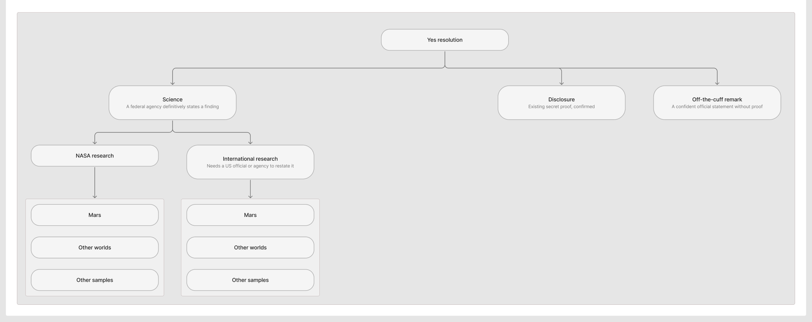
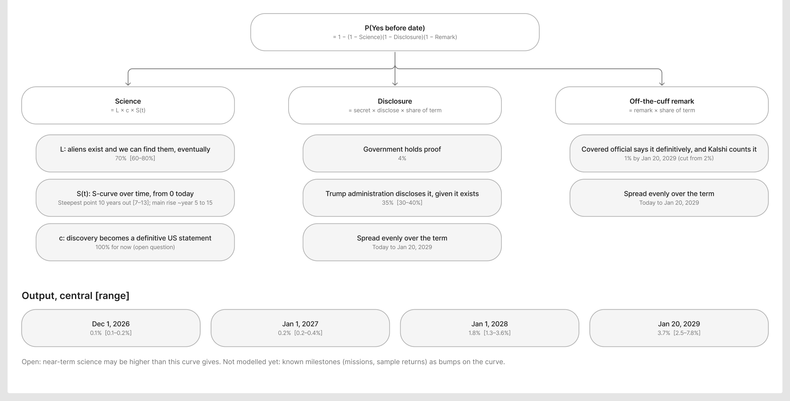
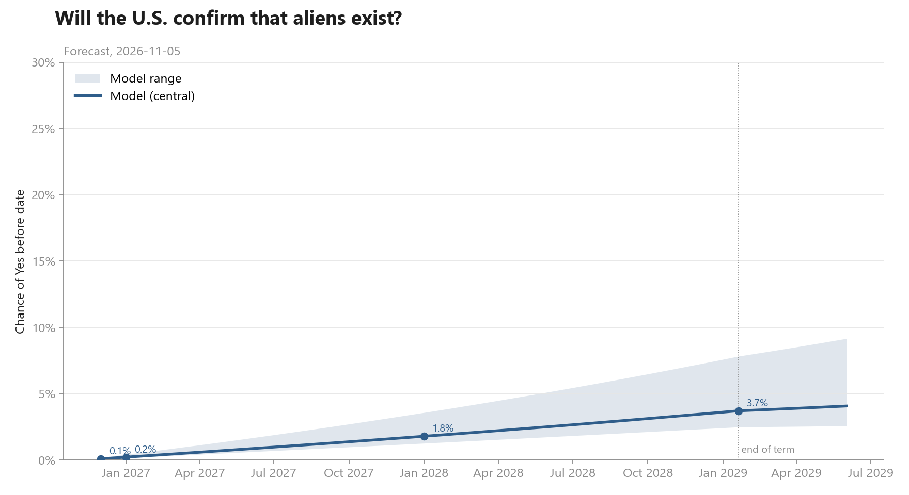

Kalshi KXALIENS · started 2026-11-05 · updated 2026-11-05
Will the U.S. confirm that aliens exist?
GitHub · suggest a change · how to contribute
Model › Rationale
How it resolves
A definitive official statement counts, even without proof. Rules →
Base case
The default is No. No discovery has been confirmed, and every past market in this series has resolved No.
Three paths to Yes


- Science: a confirmed find, announced by a U.S. agency. International finds count only if a U.S. official restates them.
- Disclosure: the government already holds proof and releases it.
- Off-the-cuff remark: an official says "aliens are real" with confidence, in an official setting. The rules ask for a definitive statement, not proof (contract terms). Obama's 2026 remark wouldn't count, since he's a former official (AP).
Model inputs


- Life exists and can be found, eventually: 70% [60–80%]. A coin flip is the neutral start; the size of the universe and the pace of discovery lean it higher. Existing and being findable are taken together to avoid counting the same doubt twice.
- Timing, S-curve with its steepest point about 10 years out [7–13]. Ten years is a reasonable horizon for detection given how fast space observation is moving. The curve starts flat because the best near-term lead, the Mars sample, has no way back to Earth (Space.com), and China's sample return lands around 2031 (Space.com).
- Discovery becomes a definitive U.S. statement: 100%. A concrete find is assumed to be announced. Open question.
- The government already holds proof: 4%. Low single digits. Nothing in the released files confirms anything (The Next Web).
- This administration discloses it, given it exists: 35% [30–40%]. The release push is real (AP), but full disclosure is still less likely than not.
- Off-the-cuff remark that counts: 1% by Jan 20, 2029. A tail risk: it needs both a confident official remark and the exchange accepting it without proof.
- Disclosure and remark timing: spread evenly from today to the end of the presidential term.
P(Yes before date) = 1 − (1 − Science)(1 − Disclosure)(1 − Remark). The model is a short Python script in this repository: code/forecast_curve.py.
Forecast

| Before | Forecast [range] |
|---|---|
| Dec 1, 2026 | 0.1% [0.1–0.2%] |
| Jan 1, 2027 | 0.2% [0.2–0.4%] |
| Jan 1, 2028 | 1.8% [1.3–3.6%] |
| Jan 20, 2029 | 3.7% [2.5–7.8%] |
Assumptions
- A concrete discovery would be announced fast enough to count.
- The three paths are independent.
- Disclosure and remark chances are spread evenly over the term.
Weak points
- The near-term science curve may be too flat. Most of the gap with the market is here.
- Insiders. Anyone who knows of a coming announcement would buy Yes, so the market may be pricing information this model lacks.
- "Definitively" is undefined. A confident remark could count without proof (contract terms).
- Discovery is not announcement. Scientists take years and hedge their language; the model assumes they would not.
Update triggers
- New biosignature news: Mars, K2-18b, any sample return.
- A new PURSUE file release, or a White House or agency statement on UAP.
- Kalshi clarifying the rules or resolving a borderline case.
- New monthly markets listing (Feb 1, Mar 1, …), which add points to the curve.
Open questions
- What does the path from a discovery to an official announcement look like in practice: a press conference, or years of peer review?
- What do surveys of scientists say about whether life exists elsewhere, and when it will be found?
- Should known milestones, like a sample return or a mission arrival, show up as steps on the curve?
- Asteroid samples (Bennu, Ryugu) are not yet researched.
Use your own inputs
Try your own numbers on the Model page; the curve redraws as you type. To change the structure, such as adding a path, fork the repository and edit code/forecast_curve.py and model/model.js.
Last updated 2026-11-05 · history
Nothing here is financial advice or a recommendation to trade.